Curriculum vitæ
Mon parcours en un coup d'œil
Retrouvez le détail de mon parcours académique, mes compétences techniques (Symfony, SQL, PHP) et mes expériences sur mon CV complet.
Ouvrir mon CV (PDF)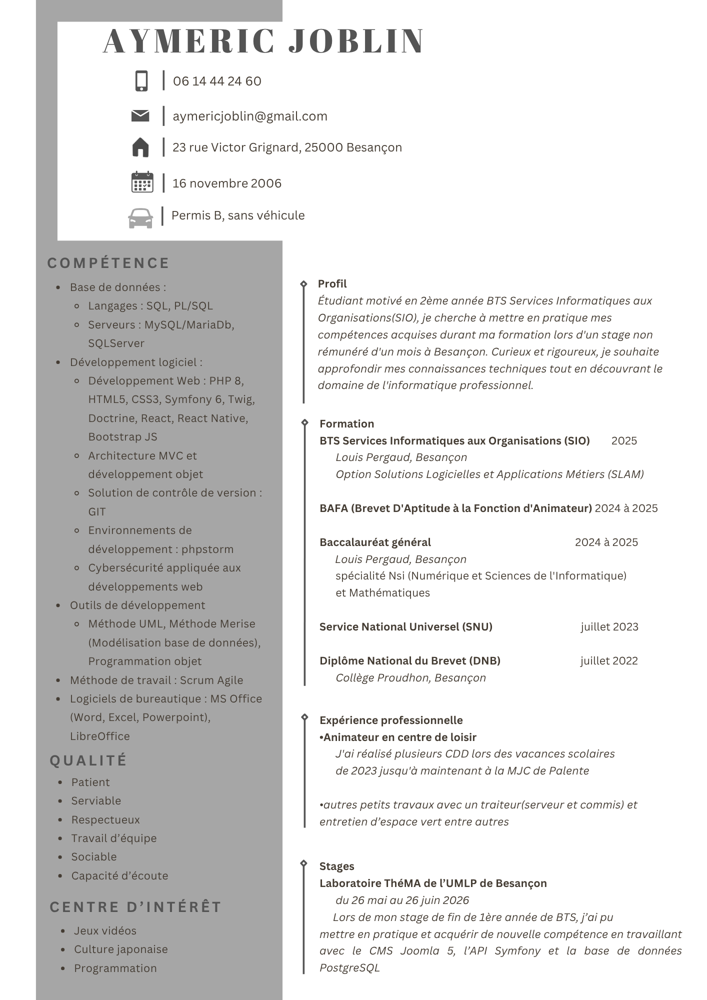
Portfolio · Étudiant en informatique
Étudiant en 2ᵉ année de BTS SIO (option SLAM).
Développeur passionné spécialisé dans le développement d'applications métiers et de sites web, je conçois des projets allant du back-end robuste aux interfaces modernes.

01 — À propos
Étudiant en informatique, je développe mes compétences à travers ma formation, mes projets et mes expériences professionnelles.
Curriculum vitæ
Retrouvez le détail de mon parcours académique, mes compétences techniques (Symfony, SQL, PHP) et mes expériences sur mon CV complet.
Ouvrir mon CV (PDF)
02 — Parcours
Deuxième année · Option SLAM (Solutions Logicielles et Applications Métiers)
Lycée Louis Pergaud
Spécialités Mathématiques et NSI (Numérique et Sciences Informatiques).
Lycée Louis Pergaud
Brevet d'animation certifié.
Engagement citoyen et séjour de cohésion.
Obtenu avec la mention Bien.
Collège Pierre-Joseph Proudhon
03 — Compétences
Quelques formations suivies autour du numérique, de la cybersécurité et de la protection des données.


04 — Réalisations
Des projets réalisés dans le cadre de ma formation et de mon portfolio.

Une page pour présenter mon parcours, mes projets et mes centres d'intérêt.

Un catalogue de films réalisé dans le cadre de ma formation.

Réalisation d'un site vitrine.
05 — Terrain
Stage de première année de BTS

Animation & emplois saisonniers


06 — Curiosité
Je n'ai pas encore commencé de veille technologique.
07 — En dehors du code
Les jeux vidéo, les animés et les mangas occupent une place importante dans mes loisirs et me passionne toujours autant.
J'ai découvert l'univers du jeu vidéo avec Pokémon Version Noire. Aujourd'hui, je me passionne également pour les jeux en ligne compétitifs et coopératifs comme Overwatch et Fortnite.
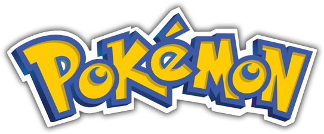

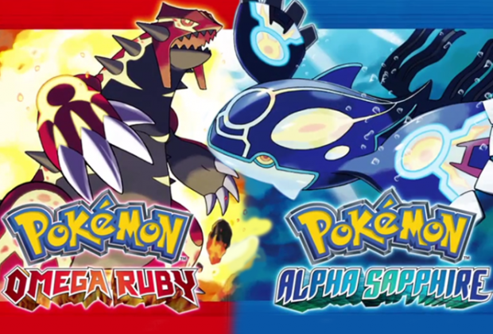
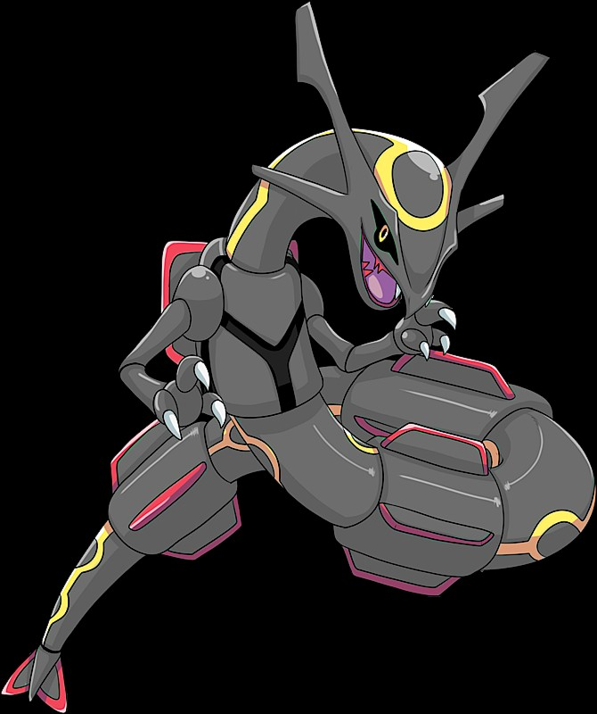
Fortnite a été ma porte d'entrée dans le monde des jeux de tir compétitif en ligne
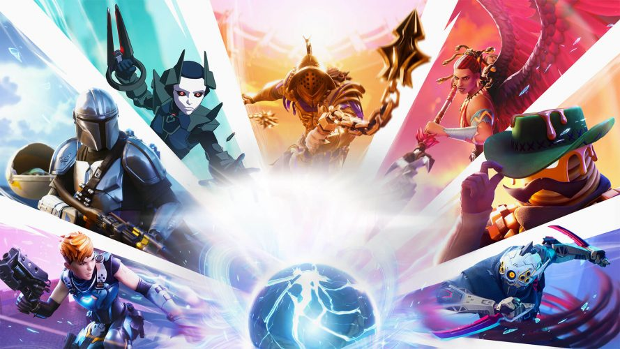
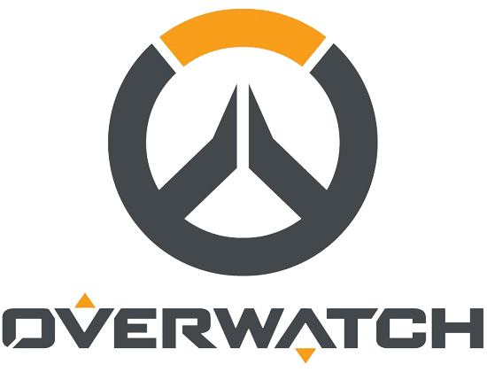
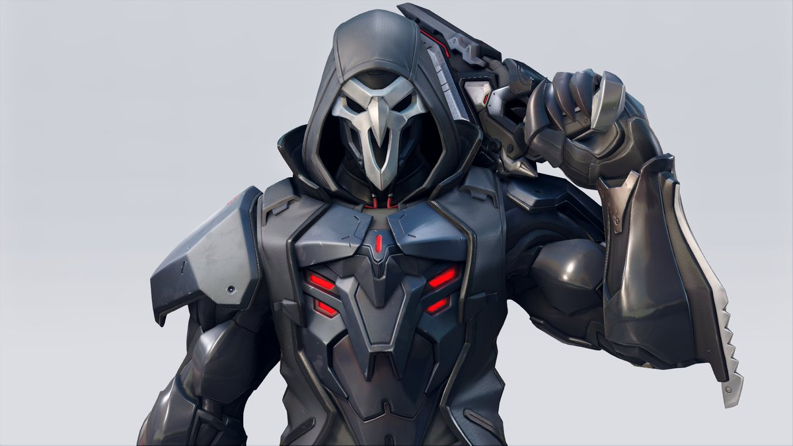
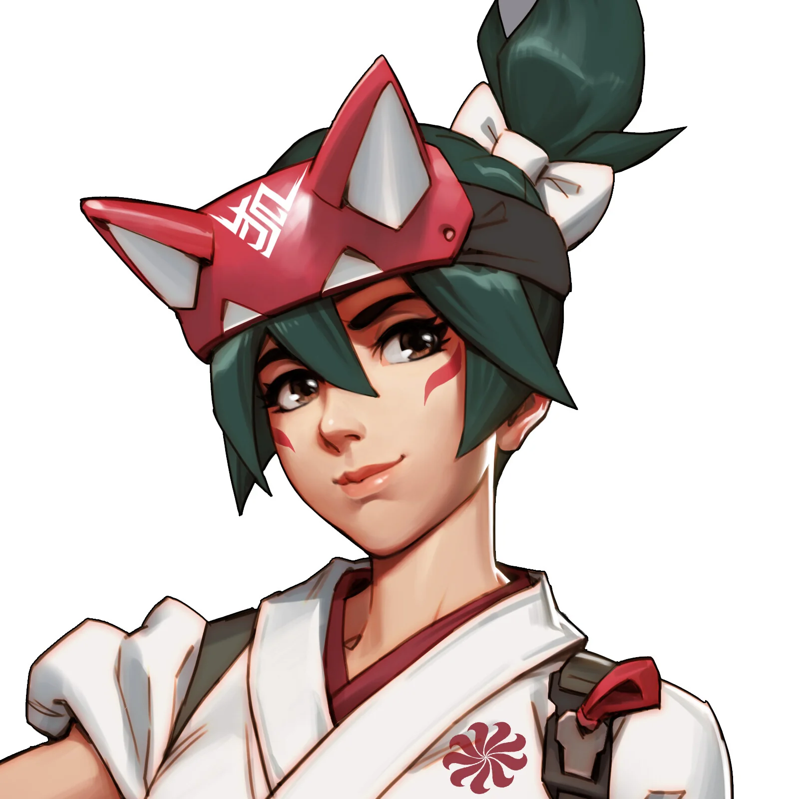
Introduit aux animés grâce à des classiques comme Dragon Ball ou Naruto diffusés à la télévision, j'ai rapidement accroché à cet univers. Depuis, je me suis passionné pour des œuvres plus modernes telles que Sword Art Online, L'Attaque des Titans ou encore 86.
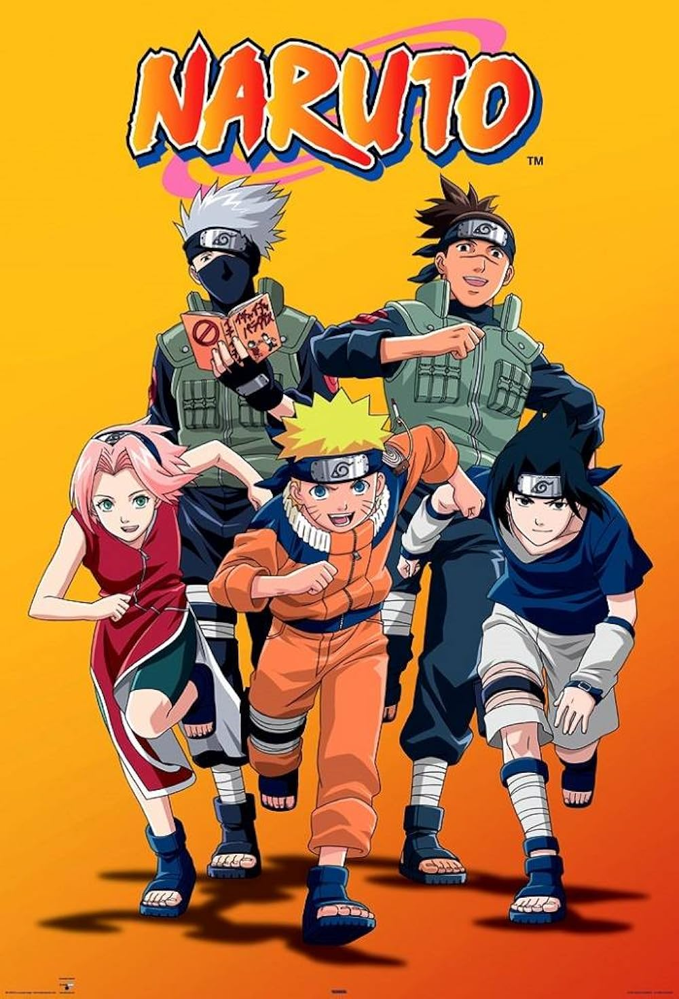
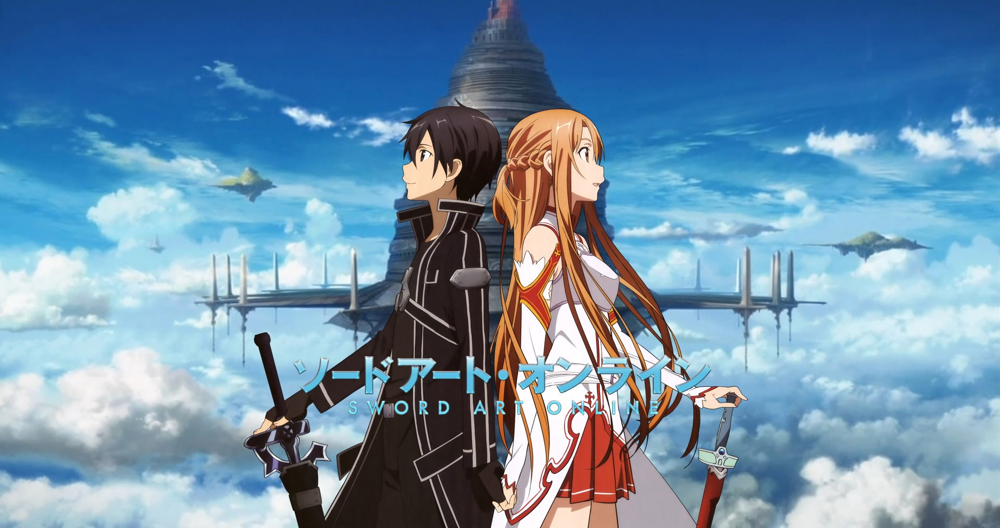
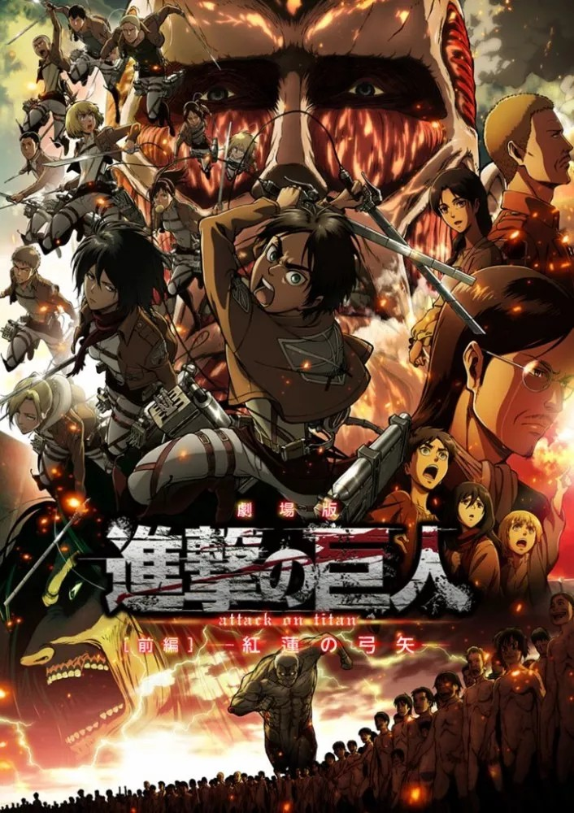
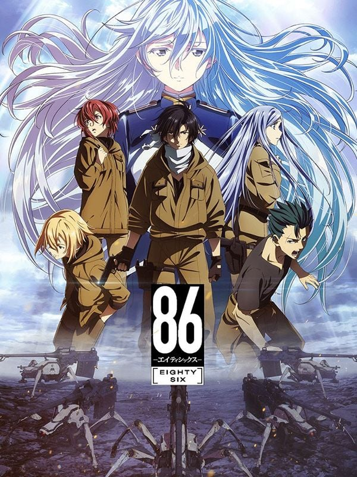